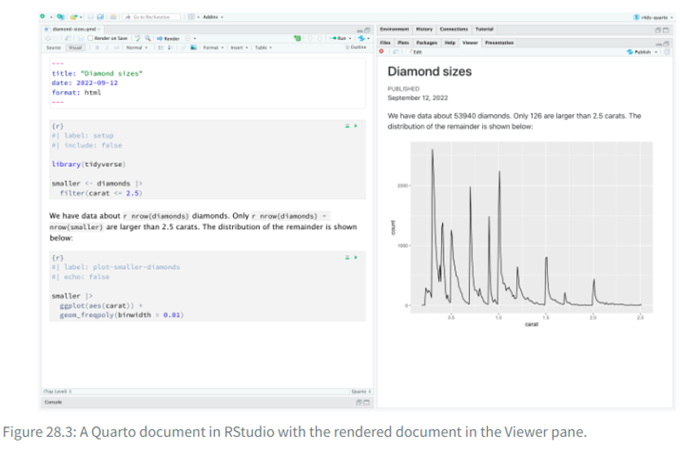

title: 'Gib hier den Namen deines Dokuments ein'
author: 'Dein Name'
date: today
format:
html:
theme: flatly
toc: # Inhaltsverzeichnis?
toc-location: # Links oder Rechts?
execute:
warning: # TRUE or FALSE
message: # TRUE or FALSEHands On – Coding Basics (Einheiten 5 und 6)
Bei Bedarf findest du hier nochmals die Slides zu Einheit 5:
1 Lernziele dieses Hands-On-Blocks
✅Basics Reproduziebarer Code
✅Quarto
✅Faktoren
✅Datentypen: Vektoren, Listen, Matrizen, Dataframes
2 Reproduzierbarer Code: Quarto
Bisher haben wir hauptsächlich in Skripten gearbeitet. RStudio bietet jedoch die Möglichkeit, in einem reproduzierbareren Format zu arbeiten – 👉 Quarto.
Quarto verbindet normalen Text und Code in einem dynamischen Dokument. Auch diese Website wurde mit Quarto erstellt. Dadurch lässt sich die Kommentierung von Code besser integrieren, was die Arbeit insgesamt reproduzierbarer macht. Mit Quarto können zudem ganze Dokumente erstellt werden, beispielsweise eine Masterarbeit.
In den folgenden Übungen setzen wir uns mit einigen der Vorteile von Quarto auseinander.
2.1 Übungen:
- Erstelle ein neues Quarto-Skript:

Versuche dich zu orientieren: Wo wechselst du zwischen dem Visual Editor und dem Source Editor?
Erstelle eine Überschrift:
Suche zuerst nach der entsprechenden Option im Visual Editor.
Schau dir anschließend die Überschrift im Source Editor an. Wie unterscheiden sich Überschriften von normalem Text?
Schreibe einige Dinge in kursiv, fett, unterstrichen, Schaue dir diese im Source Viewer an.
Erstelle einen neuen Code-Block:
- Versuche es im Visual Editor, indem du ein „/“ eingibst und im Drop-down-Menü „R-Code Chunk“ auswählst.
Kreiere eine neue Variable
datummit dem heutigen Datum. Nutze dafürSys_date().Füge folgenden dynamischen Satz in dein Dokument ein: „Dieses Dokument wurde zum letzten Mal am
datumbearbeitet.“ Nutze dafür “Inline R Code”. Diesen kannst du hinzufügen indem du “/” benutzt.Rendere dein erstes Dokument: Nutze dafür den Render-Button und schau dir das Ergebnis in deinem Ordner an. Was ist mit deinem dynamischen Satz passiert?
Das Resultat sollte so aussehen (mit dem aktuellen Datum):
Dieses Dokument wurde zum letzten Mal am 2025-10-14 bearbeitet.
Important
Quarto-Dokumente lassen sich nur rendern, wenn das gesamte Skript fehlerfrei durchläuft. Tritt beim Rendern ein Fehler auf, ist es sinnvoll, das gesamte Skript auszuführen und auf Fehlermeldungen zu achten. Auf diese Weise wird die Reproduzierbarkeit sichergestellt.
2.2 Quarto Header
In den Quarto-Headern lassen sich verschiedene Einstellungen vornehmen.
Beispielsweise kann man den Output des Dokuments anpassen (z. B. format: html).
Manchmal möchte man auch globale Einstellungen vornehmen, die für das gesamte Dokument gelten.
Zum Beispiel kann es sinnvoll sein, Warnmeldungen von R im gerenderten Dokument auszublenden, um die Übersicht zu behalten.
Dies lässt sich mit der Option warning: false einstellen.
Viele weitere Einstellungsmöglichkeiten findest du unter folgendem Link.

2.2.1 Übungen Quarto Header
Stelle in deinem Quarto Header die folgenden Einstellungen ein indem du die Elemente des YAML-Headers überarbeitest. Diesen findest du ganz oben in deinem Dokument.
Titel
Autor:in
Inhaltsverzeichnis (toc) = TRUE
Position des Inhaltsverzeichnisses = left
Warning = FALSE
Message = FALSE
Aufgabe: Rendere das Dokument erneut und überprüfe das gerenderte Ergebnis im Vorschaufenster oder im Ausgabeordner.
3 Faktoren:
👉Einführung in R, Kapitel 2.4.4
Aufgabe: Arbeiten mit kategorialen Variablen (Faktoren)
Kategoriale bzw. nominale Variablen werden in R als Faktoren gespeichert (factor-Datentyp).
Erstelle einen Character-Vektor mit mindestens fünf Einträgen, die verschiedene Geschlechtskategorien enthalten (z. B. “male”, “female”, “nonbinary”).
Definiere nun einen Faktor mit der Funktion
factor()für diesen Vektor.Übergib den Vektor an
factor().Benenne die Levels (optional)
- Untersuche die Eigenschaften deines Faktors mit den Funktionen
class(),attributes()undtable().
- Untersuche die Eigenschaften deines Faktors mit den Funktionen
Beachte: Die erste Stufe des Faktors ist die sogenannte Referenzkategorie – sie ist für manche Analysen relevant. Mit relevel() kannst du die Referenzkategorie ändern.
4 Datenstrukturen: Vektoren, Listen, Matrizen und Data Frames
Bevor wir mit den Übungen starten, ein Überblick über die Unterschiede:
| Struktur | Eigenschaften | Beispiel-Inhalt |
|---|---|---|
| Vektor | - Enthält Elemente eines Datentyps - Grundbaustein in R |
c(1, 2, 3) oder c("Anna", "Ben") |
| Liste | - Kann verschiedene Datentypen enthalten - Elemente können unterschiedlich lang sein |
Zahlenvektor, Textvektor, logischer Vektor in einer Liste |
| Matrix | - Enthält nur einen Datentyp - Hat feste Dimensionen (Zeilen, Spalten) |
3x3-Matrix mit Zahlen 1–9 |
| Data Frame | - Tabellarisch aufgebaut - Spalten können unterschiedliche Datentypen enthalten - Jede Spalte gleich lang |
Tabelle mit Name (Character), Alter (Numeric), Studiert (Logical) |
👉 Merksatz:
- Vektor = einfachste Struktur, ein Datentyp
- Liste = flexibel, verschiedene Datentypen
- Matrix = „Zahlenrechteck“, ein Datentyp
- Data Frame = Tabelle, Spalten können unterschiedliche Datentypen haben
4.1 Vektoren:
Wir haben in den Hands-On-Übungen einige einfache Vektoren erstellt und damit operiert.
XXXX @Sandra trotzdem noch repetition von Vektoren Übungen?
4.2 Matrizen
Eine Matrix besteht nur aus einem Datentyp (z. B. nur Zahlen).
Erstelle eine 3x3-Matrix mit den Zahlen 1 bis 9.
Wandle einen Vektor 1:12 in eine 3x4-Matrix um.
Greife auf das Element in der 2. Zeile, 3. Spalte zu.
Berechne die Spaltensummen und Zeilensummen.
4.3 Listen
Eine Liste kann verschiedene Datentypen enthalten (z. B. Zahlen, Zeichenketten, logische Werte).
👉 Einführung in R, Kapitel 2.4.5
Erstelle eine Liste mit drei Elementen und der Funktion
list():einem Vektor mit den Zahlen 1 bis 5
einem Character-Vektor mit den Namen deiner Kommiliton:innen
einem logischen Vektor (TRUE, FALSE)
Greife auf das zweite Element der Liste zu.
Greife auf den dritten Wert des ersten Elements der Liste zu.
Füge der Liste ein weiteres Element hinzu (z. B. den Mittelwert der Zahlen).
4.4 Data Frames
👉Einführung in R, Kapitel 2.4.6
Ein Data Frame ist eine tabellarische Struktur mit Spalten, die verschiedene Datentypen enthalten können.
Erstelle einen Data Frame mit drei Spalten:
name (Character)
alter (Numeric)
studiert (Logical: TRUE/FALSE)
Greife auf die Spalte “alter” zu.
Filtere alle Zeilen, in denen studiert == TRUE.
Füge eine neue Spalte hinzu, die alter + 10 berechnet.
Zusätzliche Übungen? Nötig oder schon zu viel?
Fix this Code